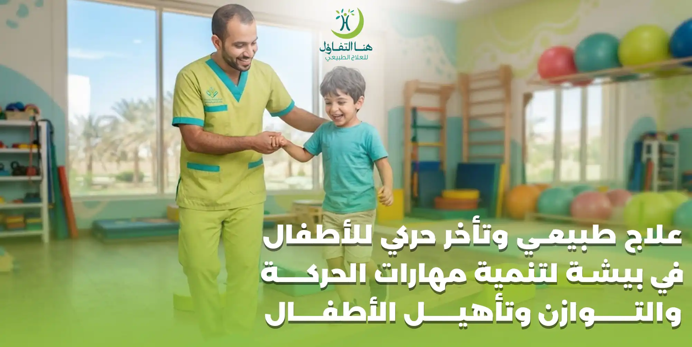

تطور الطفل لا يقتصر على النمو الجسدي فقط، وإنما يشمل مجموعة من المهارات التي يكتسبها تدريجيًا، مثل التحكم في الرأس، والتدحرج، والجلوس، والزحف، والوقوف، والمشي، واستخدام اليدين والتفاعل مع البيئة المحيطة.
وقد يلاحظ الوالدان أحيانًا أن الطفل يتأخر في اكتساب بعض المهارات الحركية، أو يجد صعوبة في التوازن، أو يعاني من ضعف في العضلات، أو يواجه تحديات في المشي والحركة.
في هذه الحالات، يمكن أن يكون العلاج الطبيعي للأطفال والتأهيل الحركي جزءًا مهمًا من خطة الرعاية، بعد تقييم حالة الطفل وتحديد احتياجاته وأهدافه.
وتوضح مراكز مكافحة الأمراض والوقاية منها CDC أن متابعة مراحل النمو والتطور الحركي تساعد على اكتشاف التأخر في وقت مبكر، وأن التدخل المبكر يمكن أن يساعد الأطفال على تعلم مهارات جديدة وتحسين قدراتهم.
ولهذا فإن الهدف من جلسات العلاج الطبيعي للأطفال لا يكون مجرد أداء تمارين متكررة، وإنما تطوير مهارات حركية مرتبطة بحياة الطفل اليومية، بطريقة مناسبة لعمره وقدراته، مع إشراك الطفل والأسرة في رحلة التأهيل.
ما المقصود بالعلاج الطبيعي للأطفال؟
العلاج الطبيعي للأطفال هو أحد مجالات التأهيل التي تهتم بتقييم وعلاج المشكلات التي تؤثر في الحركة والقدرات الجسدية لدى الأطفال.
وقد يستفيد منه الطفل عندما توجد مشكلة في:
- الحركة.
- التوازن.
- المشي.
- القوة العضلية.
- التحكم في الجسم.
- المهارات الحركية الكبرى.
- بعض المهارات الحركية الدقيقة.
- المرونة ومدى حركة المفاصل.
- القدرة على الانتقال بين الأوضاع المختلفة.
وتختلف أهداف العلاج الطبيعي حسب عمر الطفل وحالته.
فقد يكون الهدف لطفل صغير هو تحسين التحكم في الرأس والجلوس، بينما قد يكون الهدف لطفل آخر هو الوقوف والمشي والتوازن، وقد يحتاج طفل مصاب بالشلل الدماغي إلى برنامج تأهيلي طويل المدى يركز على الحركة والاستقلالية والوظائف اليومية.
ما هو التأخر الحركي عند الأطفال؟
التأخر الحركي يعني أن الطفل لا يكتسب بعض المهارات الحركية المتوقعة لعمره في الوقت المعتاد، أو يواجه صعوبة واضحة في أداء مهارات حركية يستطيع معظم الأطفال في العمر نفسه أداءها.
وقد يظهر التأخر في صورة:
- تأخر في التحكم بالرأس.
- التأخر في التدحرج.
- صعوبة في الجلوس.
- تأخر في الزحف.
- صعوبة في الوقوف.
- تأخر في المشي.
- عدم الثبات أثناء المشي.
- صعوبة في صعود الدرج.
- ضعف في أحد الأطراف.
- صعوبة في استخدام اليدين.
- ضعف في التوازن.
- الاعتماد الكبير على الآخرين في الحركة.
لكن وجود تأخر في مهارة معينة لا يعني تلقائيًا أن الطفل مصاب بمرض محدد، ولذلك يحتاج الأمر إلى تقييم متخصص لمعرفة السبب وطبيعة الصعوبة.
وتوضح CDC أن تأخر الوصول إلى بعض المهارات الحركية يمكن أن يكون علامة تستدعي التقييم، وأن متابعة التطور والفحص النمائي يساعدان في تحديد الأطفال الذين يحتاجون إلى مزيد من التقييم أو التدخل.
أهمية اكتشاف التأخر الحركي في وقت مبكر
كلما تم التعرف على المشكلة مبكرًا، أصبح من الممكن البدء في تقييم احتياجات الطفل ووضع خطة تدخل مناسبة في وقت أبكر.
ولا يعني ذلك أن كل طفل متأخر في مهارة حركية يحتاج بالضرورة إلى جلسات علاج طبيعي مكثفة، وإنما المقصود هو عدم تجاهل العلامات المقلقة لفترة طويلة دون تقييم.
ومن العلامات التي تستحق مناقشة الطبيب أو المختص:
- عدم اكتساب مهارة حركية متوقعة.
- فقدان مهارة كان الطفل يؤديها سابقًا.
- وجود فرق واضح بين استخدام الطرفين.
- صعوبة مستمرة في التوازن.
- ضعف واضح في الحركة.
- تيبس شديد أو ارتخاء ملحوظ في العضلات.
- صعوبة غير معتادة في الوقوف أو المشي.
وتنصح CDC الآباء الذين لديهم مخاوف بشأن تطور طفلهم بالتحدث مع مقدم الرعاية الصحية وطلب الفحص النمائي عند الحاجة، وعدم الاعتماد فقط على الانتظار لمعرفة ما إذا كان الطفل سيلحق بأقرانه.
العلامات التي قد تشير إلى حاجة الطفل لتقييم حركي
تختلف العلامات باختلاف العمر والحالة، لكن يمكن ملاحظة بعض المؤشرات مثل:
صعوبة التحكم في الرأس
خصوصًا عندما تكون المشكلة واضحة ومستمرة مقارنة بالمهارات المتوقعة للطفل.
تأخر الجلوس
إذا واجه الطفل صعوبة مستمرة في الجلوس أو الحفاظ على وضعية الجلوس.
صعوبة الزحف أو الحركة على الأرض
قد تكون هناك أنماط حركة غير متناسقة أو اعتماد زائد على جانب واحد من الجسم.
تأخر الوقوف
قد يجد الطفل صعوبة في تحمل وزن جسمه أو الانتقال من الجلوس إلى الوقوف.
تأخر المشي
قد يكون التأخر في المشي أحد أسباب طلب تقييم العلاج الطبيعي، خصوصًا عندما يصاحبه ضعف أو عدم توازن أو علامات حركية أخرى.
السقوط المتكرر
السقوط المتكرر بشكل غير معتاد قد يرتبط أحيانًا بضعف التوازن أو التحكم الحركي.
المشي بطريقة غير متوازنة
مثل المشي على أطراف الأصابع لفترات غير مناسبة للعمر أو وجود اختلاف واضح بين طريقة استخدام الساقين.
استخدام يد واحدة بصورة مفرطة
وجود فرق واضح ومستمر في استخدام اليدين لدى طفل صغير قد يستدعي مناقشة الأمر مع الطبيب.
العلاج الطبيعي للأطفال وتأخر المشي
تأخر المشي من أكثر الأسباب التي تجعل الأسر تبحث عن العلاج الطبيعي للأطفال.
لكن تأخر المشي ليس له سبب واحد، ولذلك لا ينبغي البدء في تمارين عشوائية لمجرد أن الطفل لم يبدأ المشي في الوقت المتوقع من الأسرة.
قد تكون هناك أسباب متعددة، مثل اختلاف طبيعي في سرعة التطور، أو ضعف عضلي، أو مشكلة في التوازن، أو اضطراب حركي، أو حالة عصبية أو عضلية تحتاج إلى تقييم.
ولهذا تبدأ الخطة الجيدة بالتقييم.
ويتم النظر إلى:
- قوة العضلات.
- التحكم في الرأس والجذع.
- القدرة على الجلوس.
- القدرة على الوقوف.
- التوازن.
- طريقة الانتقال بين الأوضاع.
- تحمل الوزن على الساقين.
- نمط الحركة.
- استخدام الطرفين.
- المهارات الحركية المناسبة للعمر.
وبعد ذلك يمكن تحديد ما إذا كان الطفل يحتاج إلى برنامج علاج طبيعي أو إلى تقييم طبي إضافي أو إلى متابعة فقط.
العلاج الطبيعي للأطفال المصابين بالشلل الدماغي
الشلل الدماغي من الحالات التي قد تؤثر على الحركة والتوازن ووضعية الجسم، وتختلف أعراضه وشدته بشكل كبير من طفل إلى آخر.
وتوضح CDC أن الشلل الدماغي يؤثر في القدرة على الحركة والحفاظ على التوازن والوضعية، وأن الأعراض تختلف من شخص إلى آخر. كما أن الخطة العلاجية قد تشمل العلاج الطبيعي والعلاج الوظيفي وعلاج النطق والأجهزة المساعدة وغيرها بحسب احتياجات الطفل.
ولهذا لا توجد خطة واحدة تناسب جميع الأطفال المصابين بالشلل الدماغي.
قد يحتاج طفل إلى التركيز على:
- التحكم في الرأس.
- الجلوس.
- التوازن.
- الوقوف.
- المشي.
بينما قد يحتاج طفل آخر إلى:
- تحسين التحكم في الأطراف.
- التدريب على الانتقال.
- استخدام الأجهزة المساعدة.
- زيادة الاستقلالية.
- تحسين المشاركة في الأنشطة اليومية.
وتوصي منظمة الصحة العالمية بتوفير النشاط البدني والتمارين المنظمة لتحسين التطور والمهارات الحركية والوظيفة لدى الأطفال والمراهقين المصابين بالشلل الدماغي، مع مراعاة طبيعة الحالة.
أهداف العلاج الطبيعي للطفل المصاب بالشلل الدماغي
يمكن أن تشمل أهداف البرنامج:
- • تحسين القدرة على الحركة.
- • دعم التحكم في الجسم.
- • تطوير التوازن.
- • تحسين القدرة على الجلوس.
- • تحسين الوقوف.
- • تطوير مهارات المشي عندما تكون ممكنة.
- • تحسين استخدام الأطراف.
- • المحافظة على مدى الحركة.
- • زيادة الاستقلالية.
- • تسهيل أداء الأنشطة اليومية.
- • دعم مشاركة الطفل في اللعب والمدرسة والأنشطة المناسبة لعمره.
ولا يكون الهدف بالضرورة أن يصل كل طفل إلى نفس مستوى الحركة؛ فالأهداف يجب أن تكون واقعية وفردية وفق قدراته.
جلسات العلاج الطبيعي للأطفال بطريقة ممتعة وتفاعلية
من أهم النقاط التي تميز العلاج الطبيعي للأطفال عن العلاج الطبيعي للبالغين أن الطفل يحتاج إلى طريقة مختلفة في التعامل معه.
فالطفل قد لا يتقبل أداء تمرين متكرر بالطريقة التقليدية، ولذلك يمكن دمج المهارات العلاجية داخل أنشطة ممتعة ومناسبة لعمره.
يمكن أن تتضمن الجلسة:
- • ألعاب الحركة.
- • أنشطة التوازن.
- • الوصول إلى الألعاب.
- • المشي داخل مسار بسيط.
- • الانتقال بين الأوضاع.
- • الأنشطة التي تتطلب استخدام اليدين.
- • ألعاب تقوية العضلات.
- • أنشطة التحكم في الجسم.
- • تدريبات مرتبطة بالوقوف والمشي.
والفكرة الأساسية هي أن اللعب يمكن أن يصبح وسيلة لتدريب الطفل على مهارة حركية محددة، وهذا يساعد على جعل الجلسة أكثر تفاعلًا بالنسبة للطفل، مع الحفاظ على الهدف التأهيلي للنشاط.
تقوية العضلات عند الأطفال
قد يكون ضعف العضلات أحد الأسباب التي تؤثر على قدرة الطفل على الحركة.
لكن تقوية العضلات لدى الأطفال لا تعني استخدام برنامج واحد لجميع الحالات.
فقد يحتاج الطفل إلى تدريبات بسيطة مرتبطة باللعب والحركة، بينما قد يحتاج طفل آخر إلى برنامج أكثر تخصصًا بسبب وجود حالة عصبية أو عضلية.
ويتم تحديد:
- العضلات التي تحتاج إلى دعم.
- نوع النشاط المناسب.
- مستوى الصعوبة.
- عدد مرات التكرار.
- مدة النشاط.
- درجة المساعدة المطلوبة.
بحسب عمر الطفل وحالته وقدرته على أداء النشاط.
تمارين التوازن للأطفال
التوازن عنصر أساسي في العديد من المهارات الحركية.
فالطفل يحتاج إلى التوازن من أجل:
- • الجلوس.
- • الوقوف.
- • المشي.
- • تغيير الاتجاه.
- • صعود الدرج.
- • اللعب.
- • الجري.
- • المشاركة في الأنشطة المدرسية.
وقد تتضمن جلسات التأهيل أنشطة لتحسين التحكم في الجسم ونقل الوزن والوقوف والحركة، بما يتناسب مع قدرة الطفل.
تنبيه:
ولا ينبغي إجبار الطفل على أداء أنشطة توازن صعبة دون إشراف، خصوصًا إذا كان يعاني من ضعف واضح أو اضطراب في الحركة.
تأهيل مهارات المشي عند الأطفال
المشي ليس مجرد تحريك الساقين، وإنما يحتاج إلى تكامل عدة عناصر، منها:
ولهذا قد يعمل أخصائي العلاج الطبيعي مع الطفل على مهارات مختلفة قبل الوصول إلى المشي المستقل.
وقد تبدأ الخطة من:
- • التحكم في الجلوس.
- • الانتقال إلى الوقوف.
- • تحمل الوزن.
- • الوقوف مع الدعم.
- • نقل الوزن بين الساقين.
- • الخطوات بمساعدة.
- • المشي باستخدام وسيلة مساعدة عند الحاجة.
- • زيادة الاستقلالية تدريجيًا.
ولا يمكن ضمان أن كل طفل سيصل إلى المشي المستقل، لأن ذلك يعتمد على السبب والحالة والقدرات الحركية.
العلاج الطبيعي للأطفال الذين يعانون من ضعف التوازن
ضعف التوازن قد يظهر في صورة:
- السقوط المتكرر.
- الخوف من المشي.
- صعوبة الجري.
- صعوبة صعود الدرج.
- صعوبة الوقوف على قدم واحدة.
- صعوبة تغيير الاتجاه أثناء المشي.
- صعوبة المشاركة في بعض الألعاب.
ويتم تقييم التوازن ضمن الصورة الحركية الكاملة للطفل، ثم اختيار أنشطة مناسبة لعمره وقدراته.
العلاج الطبيعي للأطفال بعد الإصابات والعمليات
قد يحتاج الطفل إلى التأهيل بعد بعض الإصابات أو العمليات الجراحية التي تؤثر في الحركة.
وقد يهدف البرنامج إلى:
- • استعادة الحركة.
- • تقليل آثار قلة النشاط.
- • استعادة القوة تدريجيًا.
- • تحسين التوازن.
- • العودة للأنشطة اليومية.
- • استعادة المهارات الحركية السابقة.
ويختلف البرنامج بحسب نوع الإصابة أو العملية وتعليمات الطبيب.
العلاج الطبيعي للأطفال بعد الكسور
بعد بعض الكسور، قد يؤدي تثبيت الطرف أو قلة الحركة لفترة إلى ضعف أو تيبس مؤقت.
وقد يساعد التأهيل المناسب، عندما يسمح الطبيب بذلك، في استعادة الحركة والقوة والوظيفة تدريجيًا.
تنبيه:
لكن يجب عدم البدء بتمارين تحميل أو حركة قوية قبل السماح الطبي المناسب، خصوصًا بعد العمليات أو الكسور.
العلاج الطبيعي للأطفال ذوي الاحتياجات الحركية
الأطفال ذوو الاحتياجات الحركية قد يحتاجون إلى برامج تأهيلية مستمرة أو دورية حسب الحالة.
وقد يشمل البرنامج:
- • العلاج الطبيعي.
- • العلاج الوظيفي.
- • الأجهزة المساعدة.
- • تدريب الأسرة.
- • التدريب على المهارات اليومية.
- • متابعة التطور الحركي.
وتوضح CDC أن خدمات التدخل المبكر للأطفال قد تشمل العلاج الطبيعي والعلاج الوظيفي وعلاج النطق وغيرها، بحسب احتياجات الطفل والأسرة.
أهمية تقييم الطفل قبل بدء جلسات العلاج الطبيعي
لا ينبغي أن يبدأ الطفل برنامجًا علاجيًا اعتمادًا على تشخيص افتراضي أو مقارنة بطفل آخر.
مستوى القوة
هل يوجد ضعف في العضلات؟ وهل هو عام أم في منطقة معينة؟
مدى الحركة
هل توجد محدودية في حركة المفاصل؟
التوازن
هل يستطيع الطفل الحفاظ على وضعية الجسم والتحكم فيها؟
المهارات الحركية
ما المهارات التي يستطيع الطفل أداءها حاليًا؟
الانتقال بين الأوضاع
هل يستطيع الطفل الانتقال من الجلوس إلى الوقوف؟ ومن الأرض إلى الوقوف؟
المشي
هل يمشي؟ وكيف يمشي؟ وهل يحتاج إلى مساعدة؟
الأهداف
ما المهارة التي تحتاج الأسرة والطفل إلى العمل عليها أولًا؟
وضع أهداف واقعية للعلاج الطبيعي للأطفال
من الأخطاء التي قد تقع فيها بعض الأسر أن يكون الهدف الوحيد هو "المشي".
بينما قد تكون هناك أهداف مهمة تسبق المشي أو تدعم الوصول إليه.
مثل:
- • التحكم في الرأس.
- • الجلوس باستقلالية.
- • الوقوف.
- • تحسين التوازن.
- • الانتقال من الأرض إلى الوقوف.
- • استخدام اليدين.
- • المشي بمساعدة.
- • المشي باستخدام جهاز مساعد.
وفي بعض الحالات، يكون الوصول إلى قدر أكبر من الاستقلالية أهم من الوصول إلى شكل معين من الحركة. لذلك يجب أن تكون الأهداف وظيفية وقابلة للمتابعة ومناسبة لقدرات الطفل.
دور الأسرة في نجاح العلاج الطبيعي للأطفال
الأسرة شريك مهم في التأهيل.
فالطفل يقضي جزءًا صغيرًا من يومه داخل جلسة العلاج، بينما يقضي بقية الوقت في المنزل والمدرسة واللعب.
لذلك يمكن أن يحصل الوالدان على إرشادات حول الأنشطة المناسبة التي يمكن دمجها في الحياة اليومية.
وقد تشمل التوجيهات:
- • طريقة مساعدة الطفل على الحركة.
- • طريقة حمله أو نقله عند الحاجة.
- • الأنشطة المنزلية المناسبة.
- • كيفية تشجيع الطفل على استخدام الطرفين.
- • كيفية توفير بيئة آمنة للحركة.
- • كيفية متابعة تطور المهارات.
وتشير برامج التدخل المبكر إلى أهمية إشراك الأسرة وتوفير التدريب والدعم لها إلى جانب الخدمات العلاجية للطفل.
العلاج الطبيعي لا يعني إجبار الطفل على الحركة
من المهم أن تكون جلسات العلاج مناسبة لعمر الطفل وقدراته.
لا ينبغي أن يتحول التأهيل إلى مصدر دائم للخوف أو الضغط.
يمكن استخدام:
- • الألعاب.
- • التشجيع.
- • الأنشطة المحببة.
- • المكافآت المناسبة.
- • التدرج.
- • تقسيم المهارة إلى خطوات صغيرة.
بحيث يشعر الطفل أنه يشارك في نشاط ممتع، وفي الوقت نفسه يتم العمل على هدف علاجي واضح.
هل كل طفل متأخر في المشي يحتاج إلى علاج طبيعي؟
ليس بالضرورة.
تأخر المشي قد يكون له أسباب مختلفة، ولذلك يجب تقييم الطفل لمعرفة السبب.
قد يكون هناك تأخر بسيط يحتاج إلى متابعة، بينما قد يكون هناك ضعف أو مشكلة في التوازن أو اضطراب حركي يحتاج إلى تدخل متخصص.
لذلك لا يُفضل الاعتماد على مقارنة الطفل بأطفال العائلة أو الأصدقاء فقط.
هل العلاج الطبيعي يعالج التأخر الحركي نهائيًا؟
لا يمكن إعطاء وعد بنتيجة واحدة لكل الأطفال.
التأخر الحركي ليس تشخيصًا واحدًا، والنتيجة تعتمد على السبب وشدة المشكلة وعمر الطفل والقدرات الموجودة لديه وأي حالات صحية مصاحبة.
الهدف من العلاج الطبيعي هو مساعدة الطفل على تطوير مهاراته وتحسين قدراته الوظيفية إلى أفضل مستوى ممكن وفق حالته.
هل يمكن أن يتحسن الطفل مع العلاج الطبيعي؟
قد يتحسن أداء الطفل في بعض المهارات مع التدخل المناسب، لكن مقدار التحسن يختلف بين الأطفال.
وتوضح CDC أن التدخل المبكر يمكن أن يساعد الأطفال الذين لديهم تأخر أو إعاقة نمائية على تعلم مهارات جديدة وتحسين قدراتهم.
ولهذا فإن التقييم المبكر والمتابعة المنتظمة مهمان عند وجود مخاوف حقيقية بشأن التطور.
كم يحتاج الطفل من جلسات العلاج الطبيعي؟
لا يوجد عدد ثابت من الجلسات لجميع الأطفال.
فقد يحتاج طفل إلى فترة محدودة، بينما تحتاج حالات أخرى إلى متابعة طويلة المدى.
ويتأثر ذلك بـ:
- عمر الطفل.
- سبب المشكلة.
- درجة التأخر.
- مستوى الحركة.
- وجود ضعف عضلي.
- وجود شلل دماغي أو حالة عصبية.
- الأهداف العلاجية.
- استجابة الطفل.
- مدى مشاركة الأسرة في البرنامج المنزلي.
ولهذا يتم تحديد عدد الجلسات ووتيرتها بعد التقييم وإعادة التقييم بشكل دوري.
هل العلاج الطبيعي للأطفال مؤلم؟
يُفترض أن تكون الأنشطة العلاجية مناسبة لقدرة الطفل، وألا يتم إجباره على أداء حركة مؤلمة دون سبب طبي واضح.
قد يشعر الطفل أحيانًا ببعض التعب العضلي أثناء النشاط، لكن ظهور ألم واضح أو مستمر أو تغير غير معتاد في حالة الطفل يستدعي إبلاغ الأخصائي وإعادة تقييم النشاط.
هل يمكن تنفيذ تمارين العلاج الطبيعي للأطفال في المنزل؟
نعم،
قد يضع أخصائي العلاج الطبيعي برنامجًا منزليًا مناسبًا للحالة.
لكن يجب أن تكون الأنشطة المنزلية:
- • مناسبة لعمر الطفل.
- • مناسبة لحالته.
- • واضحة للأسرة.
- • آمنة.
- • متوافقة مع أهداف العلاج.
تنبيه:
ولا يُنصح بنقل تمارين من الإنترنت وتطبيقها على الطفل دون معرفة ما إذا كانت مناسبة لحالته.
أهمية المتابعة وإعادة التقييم
الأطفال في مرحلة نمو مستمر، ولذلك فإن احتياجاتهم تتغير مع الوقت.
فقد ينتقل الطفل من هدف الجلوس إلى الوقوف، ثم إلى المشي، ثم إلى تحسين الجري أو صعود الدرج أو المشاركة في الأنشطة الرياضية.
ولهذا تساعد إعادة التقييم على معرفة:
- • ما الذي تحسن؟
- • ما الذي يحتاج إلى مزيد من التدريب؟
- • هل تغيرت أهداف الطفل؟
- • هل يحتاج إلى وسيلة مساعدة؟
- • هل يحتاج البرنامج إلى تعديل؟
متى يجب مراجعة الطبيب وليس الاكتفاء بالعلاج الطبيعي؟
إذا كان هناك:
- فقدان لمهارة كان الطفل يؤديها سابقًا.
- ضعف مفاجئ أو متزايد.
- ألم شديد أو مستمر.
- تشنجات أو نوبات.
- تغير واضح في الوعي أو السلوك مع أعراض عصبية.
- صعوبة جديدة في البلع أو التنفس.
- إصابة شديدة.
- تدهور واضح في الحركة.
تنبيه هام:
في هذه الحالات يجب الحصول على تقييم طبي مناسب. كما أن تشخيص حالات مثل الشلل الدماغي أو الأمراض العصبية لا يعتمد على العلاج الطبيعي وحده، وإنما قد يحتاج إلى تقييم طبي متخصص. وتوضح CDC أن تقييم الأطفال الذين لديهم مخاوف حركية قد يشمل تقييمًا نمائيًا وطبيًا من مختصين مناسبين.
العلاج الطبيعي للأطفال في بيشة مع هنا التفاؤل
في مركز هنا التفاؤل للعلاج الطبيعي والتأهيل الطبي في بيشة، يمكن أن تبدأ رحلة الطفل من خلال تقييم احتياجاته الحركية وتحديد المهارات التي تحتاج إلى دعم.
وتركز جلسات العلاج الطبيعي للأطفال على تقديم أنشطة علاجية مناسبة لعمر الطفل وقدراته، مع الاهتمام بالحركة والتوازن والقوة والمهارات الوظيفية.
وقد تشمل برامج التأهيل:
- • علاج التأخر الحركي.
- • تأهيل الأطفال المصابين بالشلل الدماغي.
- • تقوية العضلات.
- • تدريب التوازن.
- • تأهيل الوقوف.
- • تأهيل المشي.
- • تحسين التحكم الحركي.
- • التدريب على الانتقال بين الأوضاع.
- • تحسين استخدام الأطراف.
- • الأنشطة الحركية المناسبة للأطفال.
- • توجيه الأسرة للأنشطة المنزلية المناسبة.
والهدف هو مساعدة الطفل على تطوير مهاراته الحركية وزيادة قدرته على الاعتماد على نفسه والمشاركة في اللعب والأنشطة اليومية وفق قدراته.
لماذا تختلف جلسات العلاج الطبيعي للأطفال عن الكبار؟
لأن الطفل يتعلم من خلال الحركة واللعب والتفاعل.
وفي حين يستطيع البالغ فهم الهدف من تكرار تمرين معين، قد لا يتقبل الطفل تكرار الحركة نفسها لفترة طويلة.
لذلك يمكن تحويل المهارة العلاجية إلى نشاط ممتع.
بدلًا من أن نقول للطفل:
"قف وكرر الحركة."
يمكن أن يكون الهدف هو:
الوصول إلى لعبة، أو المشي نحو هدف، أو الحفاظ على التوازن أثناء نشاط ممتع.
وبذلك تصبح الحركة جزءًا من اللعب، مع وجود هدف تأهيلي واضح وراء النشاط.
العلاج الطبيعي للأطفال ودعم الاستقلالية
من أهم أهداف التأهيل الحركي مساعدة الطفل على الاعتماد على نفسه قدر الإمكان.
وقد تكون الاستقلالية في:
- • الجلوس.
- • الانتقال.
- • الوقوف.
- • المشي.
- • اللعب.
- • استخدام اليدين.
- • المشاركة في المدرسة.
- • أداء بعض الأنشطة اليومية.
ولا تعني الاستقلالية بالضرورة أن الطفل يجب أن يؤدي كل شيء دون مساعدة؛ فقد تكون الاستقلالية باستخدام وسيلة مساعدة مناسبة أو تعديل البيئة المحيطة به.
أسئلة شائعة عن العلاج الطبيعي للأطفال والتأخر الحركي
ما هو العلاج الطبيعي للأطفال؟
هو تخصص تأهيلي يهتم بتقييم وعلاج المشكلات التي تؤثر في حركة الطفل وقوته وتوازنه ومهاراته الحركية والوظيفية، وفق عمر الطفل وحالته.
متى يحتاج الطفل إلى العلاج الطبيعي؟
قد يحتاج الطفل إلى تقييم العلاج الطبيعي عند وجود تأخر واضح في المهارات الحركية، أو ضعف عضلي، أو مشكلة في التوازن أو المشي، أو بعد إصابة أو عملية، أو عند وجود حالة تؤثر على الحركة.
هل تأخر المشي يعني وجود مشكلة صحية؟
ليس بالضرورة. هناك أسباب متعددة لتأخر المشي، ولذلك يجب تقييم الطفل بدلًا من افتراض وجود مرض معين.
هل العلاج الطبيعي يساعد الطفل على المشي؟
قد يساعد التأهيل المناسب بعض الأطفال على تطوير مهارات الوقوف والمشي، لكن النتيجة تختلف حسب سبب التأخر وقدرات الطفل وحالته.
هل يمكن علاج الشلل الدماغي بالعلاج الطبيعي؟
لا يوجد علاج واحد يشفي الشلل الدماغي، لكن العلاج الطبيعي جزء مهم من خطط التأهيل التي تهدف إلى تحسين الحركة والوظيفة والاستقلالية وفق حالة الطفل.
هل جلسات العلاج الطبيعي للأطفال تكون ممتعة؟
يمكن تصميم الجلسات بصورة تفاعلية تعتمد على اللعب والأنشطة المناسبة لعمر الطفل، مع الحفاظ على الأهداف العلاجية.
هل يحتاج الطفل إلى تمارين في المنزل؟
قد يوصي الأخصائي ببرنامج منزلي مناسب، ويعتمد ذلك على حالة الطفل وأهداف التأهيل.
كم جلسة يحتاج الطفل؟
لا يوجد عدد ثابت. يتم تحديد عدد الجلسات بناءً على تقييم الطفل واحتياجاته واستجابته للعلاج.
هل العلاج الطبيعي للأطفال مؤلم؟
الأنشطة العلاجية يجب أن تكون مناسبة لقدرات الطفل، وإذا ظهر ألم واضح أو مستمر أثناء النشاط فيجب إبلاغ الأخصائي وإعادة تقييمه.
هل يمكن علاج ضعف عضلات الأطفال بالعلاج الطبيعي؟
يمكن أن يتضمن البرنامج أنشطة لتطوير القوة العضلية عندما تكون مناسبة للحالة، ويتم تحديد نوع وشدة التدريب وفق تقييم الطفل.
هل يمكن علاج مشاكل التوازن عند الأطفال؟
نعم، يمكن أن يتضمن برنامج العلاج الطبيعي أنشطة موجهة لتحسين التوازن والتحكم في الجسم وفق عمر الطفل وقدراته.
هل يمكن أن يتحسن الطفل بعد بدء العلاج الطبيعي؟
قد يحقق بعض الأطفال تحسنًا في المهارات الحركية والوظيفية مع التدخل المناسب، لكن مقدار التحسن يختلف من طفل إلى آخر.
هل يمكن بدء العلاج الطبيعي قبل معرفة التشخيص النهائي؟
في بعض الحالات قد تبدأ خدمات التدخل المبكر قبل الوصول إلى تشخيص نهائي، لكن القرار يعتمد على تقييم الطفل والجهة الطبية أو التأهيلية المختصة. وتشير CDC إلى أن خدمات التدخل المبكر يمكن أن تبدأ لبعض الأطفال الذين لديهم تأخر نمائي حتى قبل تشخيص الشلل الدماغي.
هل يحتاج الطفل المصاب بالشلل الدماغي إلى العلاج الطبيعي طوال حياته؟
قد تحتاج بعض الحالات إلى متابعة وتأهيل طويل المدى، بينما تختلف الاحتياجات من طفل لآخر. ويتم تعديل الأهداف والبرنامج مع نمو الطفل وتغير احتياجاته.
هل يمكن للطفل ممارسة الرياضة أثناء العلاج الطبيعي؟
قد تكون الأنشطة الرياضية والحركية جزءًا من حياة الطفل، لكن اختيار النشاط وشدته يجب أن يتناسبا مع حالته وقدراته وتعليمات الفريق المعالج.
ماذا أفعل إذا كان طفلي قد فقد مهارة كان يستطيع القيام بها؟
فقدان مهارة مكتسبة يستدعي التواصل مع الطبيب أو مقدم الرعاية الصحية لتقييم السبب، ولا يُفضل الاكتفاء بالانتظار أو بدء تمارين عشوائية.
احجز تقييمًا لطفلك وابدأ بخطة تأهيل مناسبة
التأخر الحركي لا يعني بالضرورة أن الطفل سيظل متأخرًا، كما أن وجود صعوبة في المشي أو التوازن لا يعني بالضرورة وجود تشخيص محدد. لكن ملاحظة المشكلة وتقييمها مبكرًا يساعدان الأسرة على فهم احتياجات الطفل واتخاذ الخطوات المناسبة. وفي هنا التفاؤل للعلاج الطبيعي والتأهيل الطبي في بيشة، تهدف برامج العلاج الطبيعي للأطفال إلى توفير جلسات حركية وتفاعلية تساعد على تطوير المهارات الحركية والتوازن والقوة والقدرة الوظيفية، مع مراعاة حالة كل طفل وأهدافه.